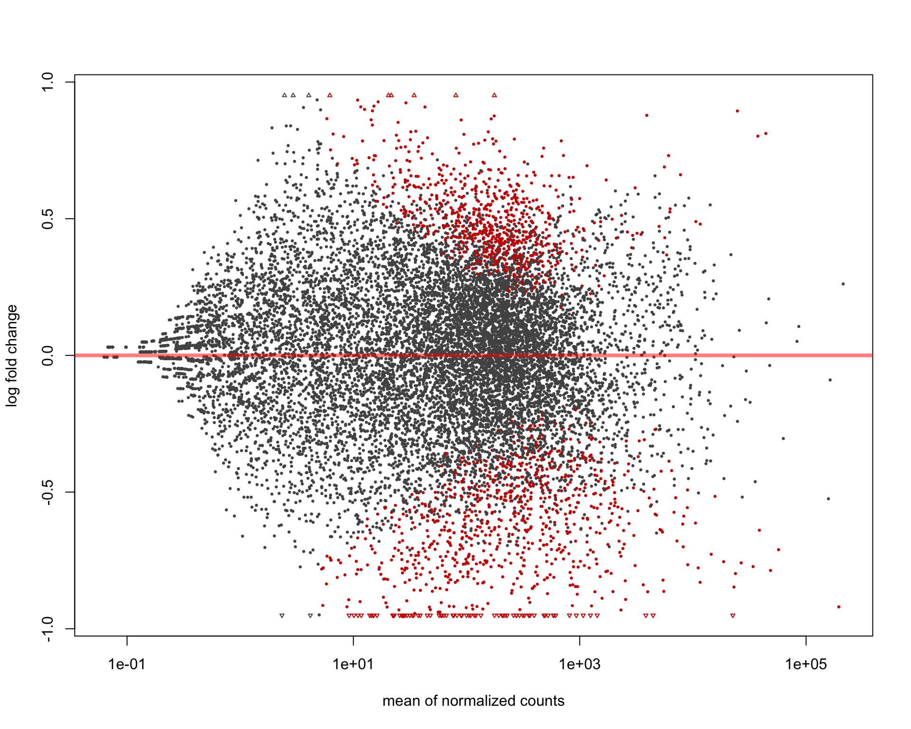
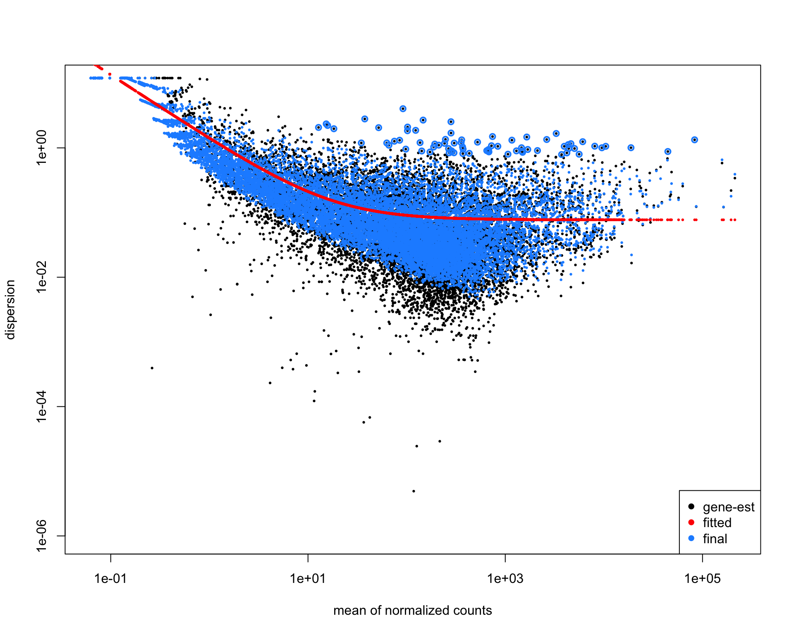
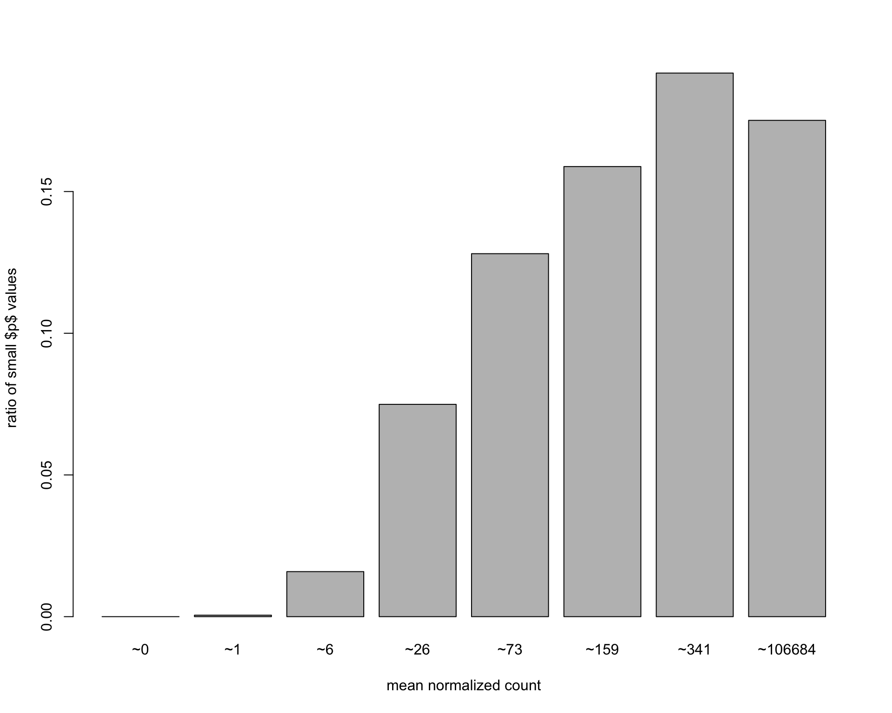
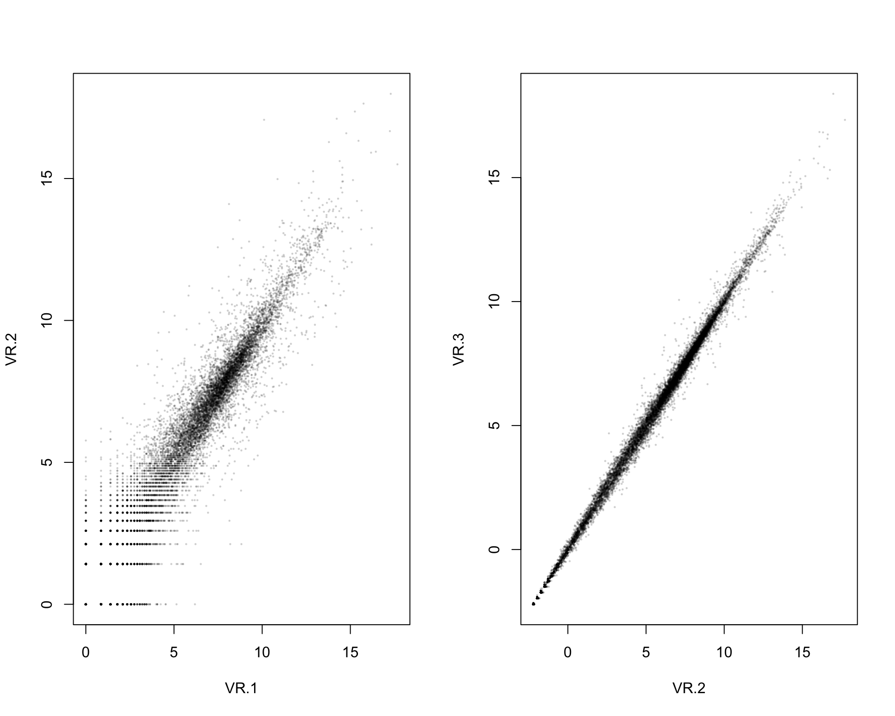
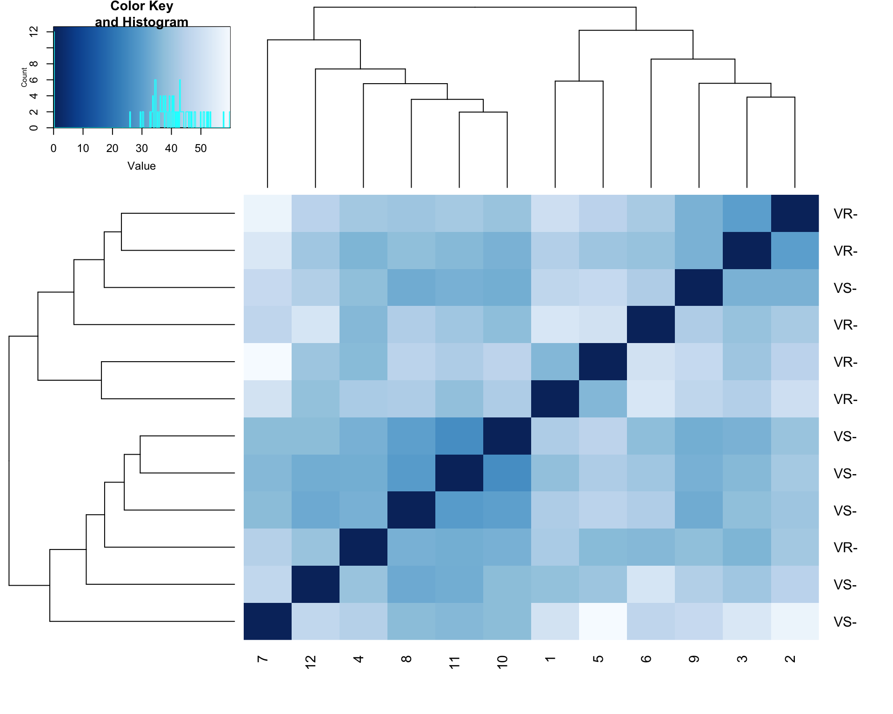
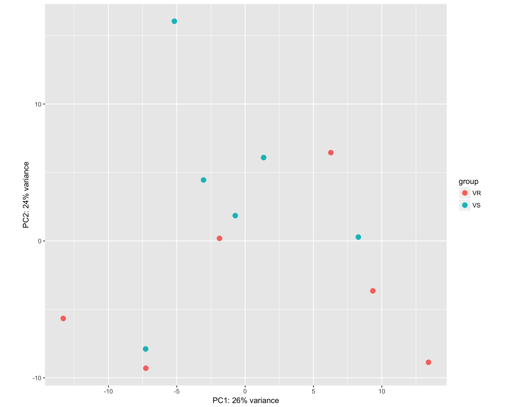

library(DESeq2)
thisPath <- "/Users/lindz/BeeVirusDiet/tblshoot-VSNP/Method3"
dat <- read.delim(file="/Users/lindz/BeeVirusDiet/AllLaneCount.txt",row.names=1,stringsAsFactors = FALSE)
colnames(dat) <- c("NC.1", "NC.2", "NR.1", "VR.1", "NS.1", "VP.1", "NS.2", "VR.2", "NP.1", "VP.2", "VC.1", "NP.2", "VP.3", "NP.3", "VS.1", "VS.2", "VC.2", "NC.3", "VP.4", "NC.4", "NR.2", "VC.3", "VC.4", "NP.4", "VR.3", "NC.5", "VS.3", "NP.5", "VC.5", "VS.4", "NS.3", "VS.5", "VP.5", "NR.3", "NR.4", "VC.6", "NS.4", "NC.6", "NP.6", "VR.4", "NR.5", "NR.6", "NS.5", "VP.6", "NS.6", "VR.5", "VR.6", "VS.6")
countdata <- dat[ , order(names(dat))]
countdata <- as.matrix(countdata)
coldata <- data.frame(row.names = colnames(countdata), virus = unlist(lapply(colnames(countdata), function (x) substring(unlist(strsplit(x, "[.]"))[1],1,1))), diet = unlist(lapply(colnames(countdata), function (x) substring(unlist(strsplit(x, "[.]"))[1],2,2))), treatment = unlist(lapply(colnames(countdata), function (x) unlist(strsplit(x, "[.]"))[1])))We can examine pairwise combinations of all samples
uTreat <- unique(unlist(lapply(colnames(countdata), function (x) unlist(strsplit(x, "[.]"))[1])))
allPairs = data.frame(Treatment1 = factor(), Treatment2 = factor(), NumberDEG = numeric())
for (i in 1:(length(uTreat)-1)){
for (j in (i+1):length(uTreat)){
sampleIndex <- which(sapply(colnames(countdata), function(x) unlist(strsplit(x,"[.]"))[1]) %in% c(uTreat[i], uTreat[j]))
subCountData <- countdata[, sampleIndex]
sampleIndex2 <- which(coldata$treatment %in% c(uTreat[i], uTreat[j]))
subColData <- coldata[sampleIndex2,]
dds = DESeqDataSetFromMatrix(countData = subCountData, colData = subColData, design = ~ treatment)
dds <- DESeq(dds)
res <- results(dds, contrast=c("treatment",uTreat[i],uTreat[j]))
rld <- rlog(dds)
degLength <- length(which((res@listData)$padj <0.05))
allPairs = rbind(allPairs, data.frame(Treatment1 = uTreat[i], Treatment2 = uTreat[j], NumberDEG = degLength))
saveRDS(list(dds, res, rld), paste0("comparisonData/", uTreat[i], "_", uTreat[j], ".rds"))
}
}factor levels were dropped which had no samplesestimating size factorsestimating dispersionsgene-wise dispersion estimatesmean-dispersion relationshipfinal dispersion estimatesfitting model and testingfactor levels were dropped which had no samplesestimating size factorsestimating dispersionsgene-wise dispersion estimatesmean-dispersion relationshipfinal dispersion estimatesfitting model and testingfactor levels were dropped which had no samplesestimating size factorsestimating dispersionsgene-wise dispersion estimatesmean-dispersion relationshipfinal dispersion estimatesfitting model and testingfactor levels were dropped which had no samplesestimating size factorsestimating dispersionsgene-wise dispersion estimatesmean-dispersion relationshipfinal dispersion estimatesfitting model and testingfactor levels were dropped which had no samplesestimating size factorsestimating dispersionsgene-wise dispersion estimatesmean-dispersion relationshipfinal dispersion estimatesfitting model and testingfactor levels were dropped which had no samplesestimating size factorsestimating dispersionsgene-wise dispersion estimatesmean-dispersion relationshipfinal dispersion estimatesfitting model and testingfactor levels were dropped which had no samplesestimating size factorsestimating dispersionsgene-wise dispersion estimatesmean-dispersion relationshipfinal dispersion estimatesfitting model and testingfactor levels were dropped which had no samplesestimating size factorsestimating dispersionsgene-wise dispersion estimatesmean-dispersion relationshipfinal dispersion estimatesfitting model and testingfactor levels were dropped which had no samplesestimating size factorsestimating dispersionsgene-wise dispersion estimatesmean-dispersion relationshipfinal dispersion estimatesfitting model and testingfactor levels were dropped which had no samplesestimating size factorsestimating dispersionsgene-wise dispersion estimatesmean-dispersion relationshipfinal dispersion estimatesfitting model and testingfactor levels were dropped which had no samplesestimating size factorsestimating dispersionsgene-wise dispersion estimatesmean-dispersion relationshipfinal dispersion estimatesfitting model and testingfactor levels were dropped which had no samplesestimating size factorsestimating dispersionsgene-wise dispersion estimatesmean-dispersion relationshipfinal dispersion estimatesfitting model and testingfactor levels were dropped which had no samplesestimating size factorsestimating dispersionsgene-wise dispersion estimatesmean-dispersion relationshipfinal dispersion estimatesfitting model and testingfactor levels were dropped which had no samplesestimating size factorsestimating dispersionsgene-wise dispersion estimatesmean-dispersion relationshipfinal dispersion estimatesfitting model and testingfactor levels were dropped which had no samplesestimating size factorsestimating dispersionsgene-wise dispersion estimatesmean-dispersion relationshipfinal dispersion estimatesfitting model and testingfactor levels were dropped which had no samplesestimating size factorsestimating dispersionsgene-wise dispersion estimatesmean-dispersion relationshipfinal dispersion estimatesfitting model and testingfactor levels were dropped which had no samplesestimating size factorsestimating dispersionsgene-wise dispersion estimatesmean-dispersion relationshipfinal dispersion estimatesfitting model and testingfactor levels were dropped which had no samplesestimating size factorsestimating dispersionsgene-wise dispersion estimatesmean-dispersion relationshipfinal dispersion estimatesfitting model and testingfactor levels were dropped which had no samplesestimating size factorsestimating dispersionsgene-wise dispersion estimatesmean-dispersion relationshipfinal dispersion estimatesfitting model and testingfactor levels were dropped which had no samplesestimating size factorsestimating dispersionsgene-wise dispersion estimatesmean-dispersion relationshipfinal dispersion estimatesfitting model and testingfactor levels were dropped which had no samplesestimating size factorsestimating dispersionsgene-wise dispersion estimatesmean-dispersion relationshipfinal dispersion estimatesfitting model and testingfactor levels were dropped which had no samplesestimating size factorsestimating dispersionsgene-wise dispersion estimatesmean-dispersion relationshipfinal dispersion estimatesfitting model and testingfactor levels were dropped which had no samplesestimating size factorsestimating dispersionsgene-wise dispersion estimatesmean-dispersion relationshipfinal dispersion estimatesfitting model and testingfactor levels were dropped which had no samplesestimating size factorsestimating dispersionsgene-wise dispersion estimatesmean-dispersion relationshipfinal dispersion estimatesfitting model and testingfactor levels were dropped which had no samplesestimating size factorsestimating dispersionsgene-wise dispersion estimatesmean-dispersion relationshipfinal dispersion estimatesfitting model and testingfactor levels were dropped which had no samplesestimating size factorsestimating dispersionsgene-wise dispersion estimatesmean-dispersion relationshipfinal dispersion estimatesfitting model and testingfactor levels were dropped which had no samplesestimating size factorsestimating dispersionsgene-wise dispersion estimatesmean-dispersion relationshipfinal dispersion estimatesfitting model and testingfactor levels were dropped which had no samplesestimating size factorsestimating dispersionsgene-wise dispersion estimatesmean-dispersion relationshipfinal dispersion estimatesfitting model and testingallPairs <- allPairs[order(allPairs$NumberDEG),]
allPairs Treatment1 Treatment2 NumberDEG
4 NC VC 2
19 NS VC 2
3 NC NS 6
8 NP NR 9
1 NC NP 10
25 VC VS 15
22 NS VS 20
23 VC VP 20
11 NP VP 24
26 VP VR 31
5 NC VP 40
27 VP VS 42
7 NC VS 112
16 NR VP 122
17 NR VR 151
20 NS VP 366
12 NP VR 419
10 NP VC 428
24 VC VR 481
6 NC VR 669
2 NC NR 680
15 NR VC 855
28 VR VS 1113
21 NS VR 1821
9 NP NS 2396
13 NP VS 2850
14 NR NS 2864
18 NR VS 3044plotMA(res)
plotDispEsts(dds, ylim = c(1e-6, 1e1))
The histogram of p-values does not look too good.
hist( res$pvalue, breaks=20, col="grey" )
Below has y-axis that doesn’t add to 1 for some reason (neither does the example in the vignette)
# create bins using the quantile function
qs <- c( 0, quantile( res$baseMean[res$baseMean > 0], 0:7/7 ) )
# "cut" the genes into the bins
bins <- cut( res$baseMean, qs )
# rename the levels of the bins using the middle point
levels(bins) <- paste0("~",round(.5*qs[-1] + .5*qs[-length(qs)]))
# calculate the ratio of £p£ values less than .01 for each bin
ratios <- tapply( res$pvalue, bins, function(p) mean( p < .01, na.rm=TRUE ) ) # plot these ratios
barplot(ratios, xlab="mean normalized count", ylab="ratio of small $p$ values")
Taking rlog transformation for EDA.
rld <- rlog(dds)
par( mfrow = c(1, 2))
plot(log2(1+counts(dds, normalized=TRUE)[, 1:2] ), col="#00000020", pch=20, cex=0.3)
plot(assay(rld)[, c(2,3)], col="#00000020", pch=20, cex=0.3)
sampleDists <- dist( t( assay(rld) ) )
sampleDists VR.1 VR.2 VR.3 VR.4 VR.5 VR.6 VS.1
VR.2 49.87545
VR.3 43.90208 30.22975
VR.4 42.33434 41.04080 35.34843
VR.5 36.11493 45.35944 40.27903 36.78790
VR.6 52.52324 41.97534 39.15606 36.23119 50.76783
VS.1 51.00124 57.74733 53.17125 44.02513 59.93102 46.22815
VS.2 42.94448 40.28700 37.89681 34.50978 45.45429 43.40911 37.13155
VS.3 46.44306 34.70833 34.59019 37.90393 47.82111 43.11267 48.16679
VS.4 42.77485 39.30787 34.69104 34.50369 45.82794 37.58443 37.31922
VS.5 38.12931 41.42825 36.47518 33.83178 42.81680 40.78993 36.29416
VS.6 38.50545 44.96866 40.73988 39.37944 40.00108 52.02990 46.98333
VS.2 VS.3 VS.4 VS.5
VR.2
VR.3
VR.4
VR.5
VR.6
VS.1
VS.2
VS.3 33.26704
VS.4 30.34458 33.62545
VS.5 29.40802 34.38664 25.88534
VS.6 32.80100 43.56876 37.32953 33.58784sampleDistMatrix <- as.matrix(sampleDists)
rownames(sampleDistMatrix) <- paste(rld$treatment, rld$patient, sep="-")
colnames(sampleDistMatrix) <- NULL
library("gplots")
library("RColorBrewer")
colours = colorRampPalette(rev(brewer.pal(9, "Blues")))(255)
heatmap.2(sampleDistMatrix, trace="none", col=colours)
print(plotPCA(rld, intgroup="treatment") )
#topVarGenes <- head( order( rowVars( assay(rld) ), decreasing=TRUE ), 35 )
#heatmap.2( assay(rld)[ topVarGenes, ], scale="row", trace="none", dendrogram="column", col = colorRampPalette( rev(brewer.pal(9, "RdBu")) )(255))